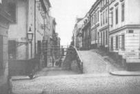
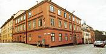
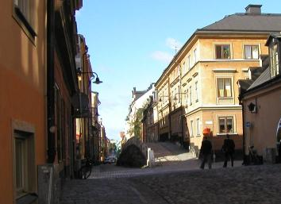
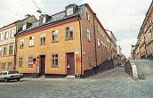

|

 Västerut. Brännkyrkagatan 18. Hörnhuset mot Bellmansgatan till höger. Brännkyrkagatan 21 till vänster före Bellmansgatan. Nr 23 efter Bellmansgatan. 1900 Västerut. Brännkyrkagatan 18. Hörnhuset mot Bellmansgatan till höger. Brännkyrkagatan 21 till vänster före Bellmansgatan. Nr 23 efter Bellmansgatan. 1900
Brännkyrkagatan 18 Huset har en tredelad fasad. Mittpartiet byggdes 1755, hörndelen uppfördes i flera etapper på 1770-talet. Den västra delen tillkomförst 1876. Carl Magnus Rosell har i en studie visat att de som bott i huset, oberoende av brand, tillbyggnader, ägandebyten ochmoderniseringar, utgjort en genomsnittlig sammansättning av hyresgäster av den karaktär som huset byggts för - dvs. engenomsnittlig befolkning av »vanligt folk«. Vid branden 1759 ägdes husen i kvarteret av det lägre borgerskapet, hantverkare och skeppare. De flesta hyresgästerna stodutanför borgerskapet som t.ex. sjömän, arbetare av olika slag, änkor och fattighjon. År 1780 beboddes huset förutom av ägaren av en bokhållare, en skomakarmästare, en avskedad gardessoldat, en bancokammardräng och två bancobetjänter. Dessutom fanns i huset två änkor och två sängliggande och ofärdiga jungfrur. Sammanlagtbodde i det dåvarande husets 15 rum och 8 kök 39 personer.
Brännkyrkagatan 21
Från väster. Bellmansgatan söderut till höger.
Gårdshuset byggdes i två etapper på 1740-talet, då fastigheten ägdes av spannmålshandlaren Lars Kiellbeck. Huset åt Bellmansgatan och Brännkyrkagatan uppfördes i två våningar 1759. Fasaden höjdes 1861, då troligen även fasaddekoren tillkom. Ägare var då mamsell Elisabeth Maria Enequist. | | 
Västerut. Brännkyrkagatan 18. Hörnhuset mot Bellmansgatan till höger. Brännkyrkagatan 21 till vänster före Bellmansgatan. Nr 23 efter Bellmansgatan. 2004År 1950 har hyresgästerna titlar som musiker, målare, köpman, sömmerska, chaufför, cementarbetare, dekoratör samt fruaroch fröknar. År 1960 visar i stort sett en likartad sammansättning av hyresgäster. År 1970 har huset börjat tömmas på sina gamla hyresgäster och lägenheterna används nu som genomgångsbostäder. Åretdärpå är huset lika obebott som efter den stora branden 1759. När huset efter 1975 års ombyggnad fick nya hyresgäster hade dessa titlar som verkmästare, byggnadsarbetare, chaufför,kontorist, packare, städerska, skådespelare, pol.mag., teleingenjör, försäkringstjänsteman och sekreterare. Utvecklingen för huset genom åren och sammansättningen av hyresgäster är representativ för många av husen på Östra Mariaberget.
Brännkyrkagatan 23 Västerut. Bellmansgatan åt vänster.
Huvudbyggnaden uppfördes 1760 för handlanden Arvid Hasseqvist. Flygeln uppfördes i en våning 1791 för konsthandlare Lindvall. Den har senare byggts på. |